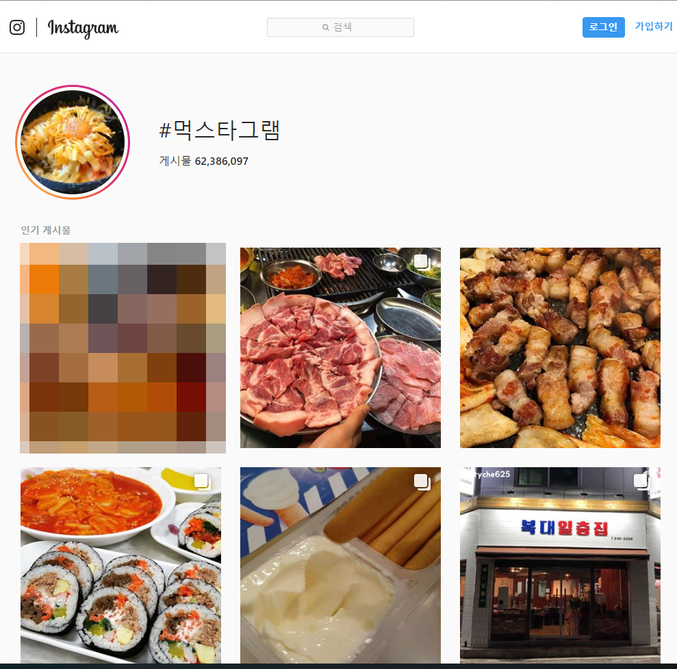
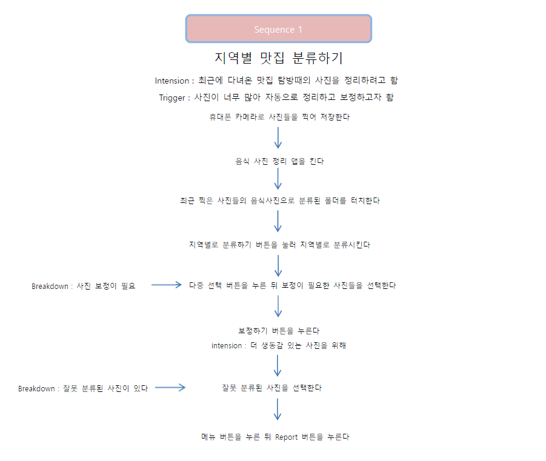

A. Refine your project proposal
A. User analysis/research

최근 많은 사람들이 인스타그램, 페이스북과 같은 SNS에 자신이 먹은 음식 사진을 휴대폰으로 찍어 게재한다. 인스타그램의 경우 ‘먹스타그램’ 혹은 ‘맛스타그램’ 과 같은 태그를 달아 게시돼있는 공개 사진들만 해도 상당히 많다 (비공개 사진까지 한다면 더욱 많을 것이다). 그만큼 음식 사진을 찍는 사람들이 많아졌고, 본인이 먹었던 음식 사진들을 정리하여 보고 싶어하는 사람들 또한 많아졌다. 그래서 이런 휴대폰으로 음식 사진을 찍기 좋아하는 사람들을 주요 사용자로 두기로 하였다. 음식 사진을 많이 찍는 사람들은 크게 예쁜 음식 사진을 찍어 감성적으로 만족하는 사람들과 맛있게 먹었던 음식을 찍어 공유하는 사람들로 나누어 볼 수 있다. 공통적으로는 색감에 민감한 사람들이 많고 높은 채도보다는 낮은 채도의 파스텔톤을 선호한다. 또한 일반적인 실내 조명 아래에서 찍은 사진은 색상이 붉은 색으로 치우쳐져 음식이 맛있게 혹은 예쁘게 보이지 않아 색보정을 한 후에 올리는 경우가 많다. 그리고 본인이 갔던 지역의 맛집들을 탐방하며 추천하고 음식 사진을 게시하는 경우도 많다. 많은 사진들 중 일일이 음식 사진들을 찾아 정리하고 보정하는 복잡하고 긴 시간이 걸리는 작업을 단순화하는 것을 바라는 사람들이 많다.
B. The functional and UI requirements.
우선 다른 사진들과 음식 사진을 나누어줄 수 있는 기능이 필요하다. 구글의 이미지 인식 AI를 통해 간단히 나누어 보여준다. AI가 잘못 인식하는 경우가 생길 수도 있으므로, 몇몇 음식 사진이지만 음식 사진으로 분류가 되지 않은 사진들은 사용자로부터 피드백을 받을 수 있도록 한다. 그리고 휴대폰으로 사진을 찍으면 현재 위치가 함께 기록되기 때문에, 이 사진 정보를 이용하여 지역별로 분류할 수 있도록 하는 기능을 제공한다. 또한 간단한 보정을 원할 때에는 선택한 음식 사진들의 화이트 밸런스를 자동 조절하여 한쪽으로 치우쳐진 색상을 보정해준다. 본인의 기호에 따라 자동으로 맞추고자 하는 화이트 밸런스의 값을 지정해주거나 자세한 색상값을 조절할 수도 있다. 이러한 기능들을 통해 간편한 터치 몇 번으로 본인이 찾고자 하는 음식 사진을 찾을 수 있어야 하며, 색감에 민감한 사용자의 감성에 맞추어 파스텔 톤으로 앱 색상을 디자인해야하며 기본적으로 사진 전문가가 아닌 일반 음식 사진을 찍기 좋아하는 사용자들을 목적으로 하기에 한 눈에 기능들을 확인하고 바로 사용할 수 있어야 한다. 그리고 추가적으로 최근 찍은 사진들은 따로 분류해준다.
C. The scenarios.
여행을 가서 음식 사진들을 포함한 사진들을 다양하게 찍는다. SNS에 올릴 음식 사진들을 따로 정리하기 위해 앱을 실행한다. 앱은 AI를 통해 최근에 찍은 사진들을 자동으로 음식 사진들과 음식 사진이 아닌 사진들을 분류해준다. 이때 간단한 색 보정을 원하는 사진들을 선택해 보정하기 버튼을 누른다. 보정을 끝낸 뒤 지역별로 분류하기를 원한다면 지역별로 분류하기를 눌러 음식들의 위치정보를 통해 지역별로 분류한다. 이 외에 분류된 사진을 터치하면 누른 사진을 확대하며, 메뉴바를 터치하여 다른 기능들을 적용할 수 있게 한다. 색상을 본인의 기호에 맞출 수 있도록 하는 기능이나 음식 사진이 아님에도 음식 사진으로 분류된 경우 혹은 반대로 음식 사진인데 음식 사진으로 분류가 안된 경우 Report 버튼을 눌러 피드백할 수 있도록 한다.
D. The task model.
위 시나리오에 대한 Task model을 작성해보았다.

B. The interface for proposal